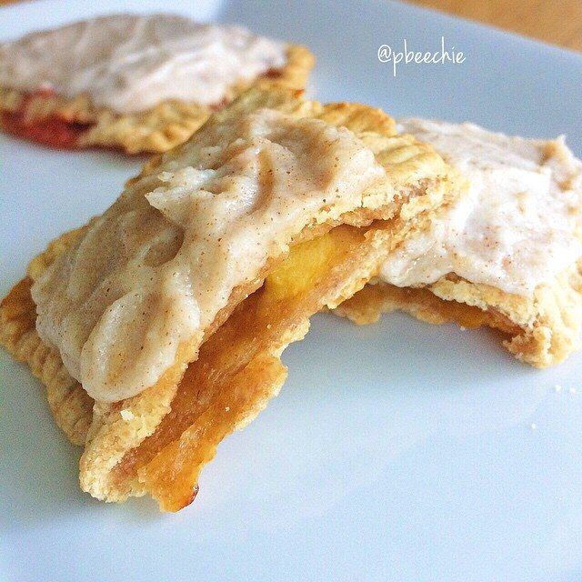

Peach Creamsicle Poptarts

I am having way too much fun baking lately. I decided to make HEALTHY peach poptarts topped with a peach creamsicle glaze!! This. Is. Heaven. I am so happy with this recipe - especially how the dough crisped on the edges. crispayyy. I also decided to make some strawberry shortcake flavor poptarts! The peach creamsicle is my fave but they're both bomb. #comfortfood
Peach Creamsicle Poptarts
Makes: 8 poptarts
Batter + Filling
-
1 cup spelt flour
-
3/4 cup tapioca starch
-
1/4 cup baking stevia
-
1/2 tsp salt
-
1/2 tsp xanthan gum
-
1 egg (+ 1 extra egg for "egg wash")
-
1/4 cup melted coconut oil
-
1/4 cup peach elli quark (could sub greek yogurt)
-
5-6 tbsp water
-
1 cup chopped peaches
Icing
-
2 TBSP peach elli quark
-
2 TBSP pure coconut butter
Preheat the oven to 350 F. In a bowl, mix 1 cup spelt flour, 3/4 cup tapioca starch, 1/4 cup baking stevia, 1/2 tsp salt, and 1/2 tsp xanthan gum. Once mixed evenly, add 1 egg, 1/4 cup melted coconut oil, 1/4 cup peach elli quark (or strawberry elli quark for the strawberry shortcake flavor! If you don't have quark, use greek yogurt), and 5-6 tbsp water. Mix mix mix until you have a thick batter. You want it thick rather than runny.
Separate the dough into 2 even sections; roll each half out flat and cut into 8 rectangles per half (thus creating 16 rectangles total).
On half of the cut dough (8 rectangles), brush the rectangle tops with 1 egg (this will help seal). Place 2 TBSP chopped peaches (or strawberries for the strawberry shortcake flavor) in the middle of each of the 8 rectangles brushed with egg. Top them with the other half of the rolled out dough, sealing the edges by pressing a fork into the dough.
Place all 8 sealed poptarts on a baking sheet sprayed with nonstick spray. Bake at 350 F for 30 minutes.
For the icing, mix 2 TBSP peach elli quark with 2 TBSP pure coconut butter. Spread on the tops of the baked poptarts. Enjoy!!